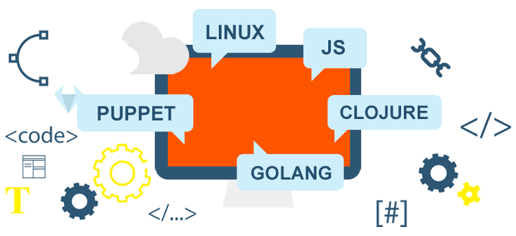

EnableIT specialiserer sig i at hjælpe firmaer med at designe og implementere stabile, højtydende og let håndterbare servermiljøer, ved brug af Open Source teknologier såsom Puppet, Linux, Loadbalancering etc.
Vi fokuserer på kvalitet og omkostningseffektive løsninger.
Arbejde sammen mod succes |
What our clients say about us